Carolyn Yu
👩🏻💻 Role
Researcher for discovering potential usability issues.Designer for proposing actionable recommendations and presenting with mockup.
🛠 Method & Tools
- Method: Moderated User Testing, Screening Questionnaire, Rainbow Sheet, SUS.
- Tools: Figma, Zoom, Excel.
💪🏻 Collaborators
- Shan Chang
- Sacchit Vartak
🗓 Project Duration
Oct 27, 2021 - Dec 15, 2021
Overview
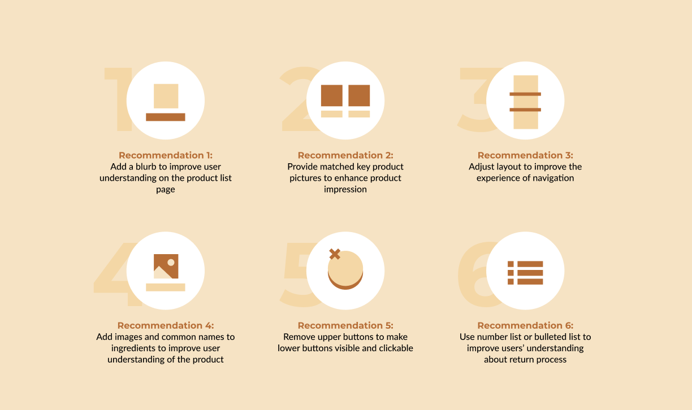
About Kazani Beauty
Before the design journey, let’s talk about our client, Kazani Beauty, a hair beauty store selling products online. Like other store owners, Kazani Beauty hopes to increase the chance of purchasing products from customers through the website. However, the current user interface still has room to improve. According to the kickoff meeting with the founder of Kazani Beauty, we narrow down the
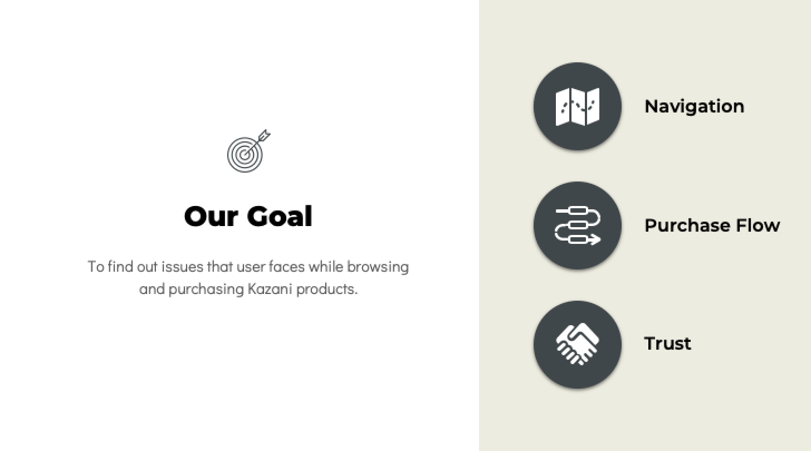
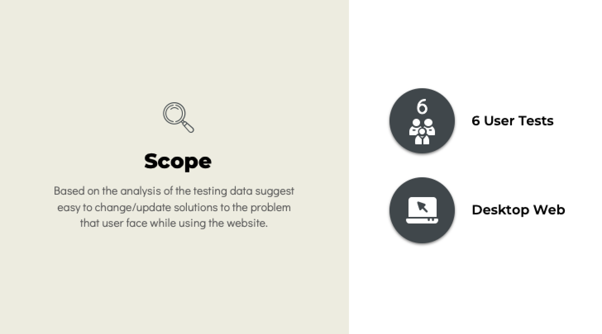
Designing the Moderated User Testing
Define the Usability Issues
To evaluate the usability of the website, the best way is
Our Design Process
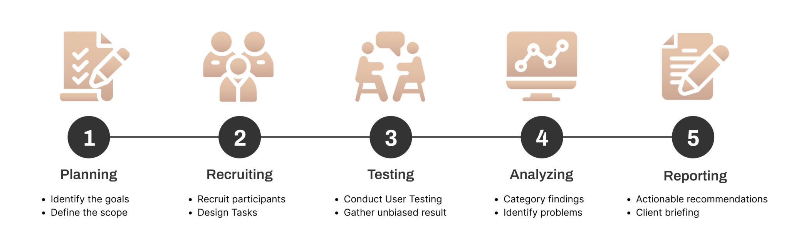
Who Are the Target Users
After we have determined the goal of this project, the first thing to do is to understand who is the potential users willing to buy Kazani Beauty products online. According to the information provided by the founder, most of the customers are around 35 to 65 years old. But there do have a trend show that the 20s years old people start to interesting in these products. Besides, the products are designed for all gender. Therefore, we use the
- 20 – 50 years old
- Comfortable browsing a website in English
- Ever shopped online for purchasing beauty products
- Consider spending $30 or more on beauty products online
- Confident to do online shopping
- Use the computer to shop online
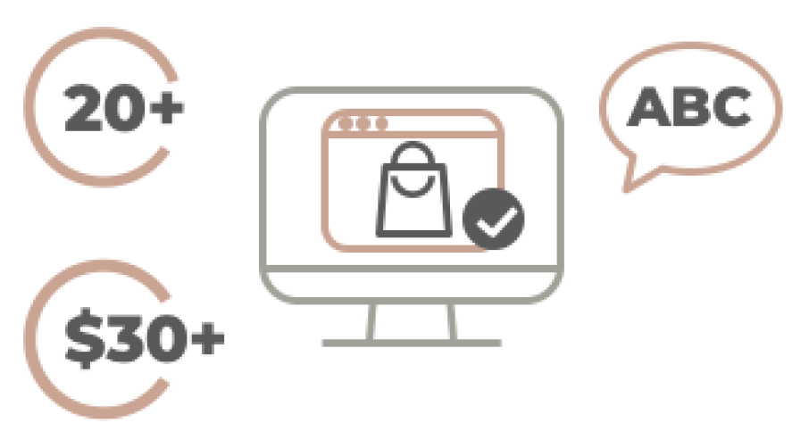
We announced the testing through social media and Pratt school email group to find our 6 potential users, their demographic breakdown is as the following description:
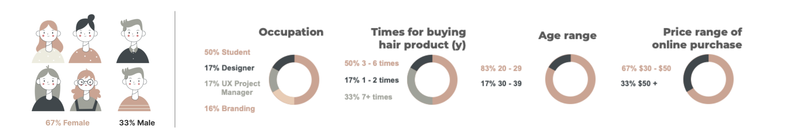
Developing Realistic Tasks
To evaluate how the current site communicates key information to a new online shopper, we formulated 6 tasks, including who Kazani is, what they sell, and what their value proposition is. The tasks were developed to prompt exploration of the most important web pages: the homepage, shop page, and product detail page.
| Task # | Task Purpose | Task description |
|---|---|---|
| 0 | Home Page Tour | What do you think you can do here? |
| 1 | Find a product | You want to make your hair healthier and shiny. Try to find a product that can help you restore your hair. |
| 2 | Ingredients | You are excited about the product purchased here, you want to recommend it to your friend. But they are allergic to Walnut, please find out if the product is suitable for them. |
| 3 | Purchase Flow | You know the product “KAZANI CALMING OIL” is suitable for you. Try to purchase this product. (Note: Continue until typing Contact information.) |
| 4 | Subscription | You have been using “KAZANI CALMING OIL” for a week now and you like the results. You come back to the home page and order the same product again but this time you plan to use this product for 6 more weeks. So how would you go about this? |
| 5 | Returns & Refunds | You purchased the wrong product and just want to know how to turn it back. Please figure out how to do that. |
What Kind of Data Do We Collect
After completing each task, each participant had to rate the difficulty of each task, as well as answer how confident they were of completing the task. After all the tasks were completed, participants were asked to answer some additional questions based on their experiences with the interface. To understand the overall experience of the website, the
The Usability Issues We Found
To synthesize and prioritize the findings we collected from the testing stage, we use
👍🏻 Key strengths
- The
purchasing process is straightforward and makes sense. - It was fairly user-friendly in terms of interactions.
- The interface is
aesthetically pleasing .
👎🏻 Key improvements
Lack of key information on the product list page.- Users
cannot understand which productmatches which content on the home page. - Users are
hard to navigate on the product detail page. - It is
difficult to scan and understand theingredient section of the product detail page. - Buttons at corners are
overlapped . - Users cannot understand how to
return and refund the product.
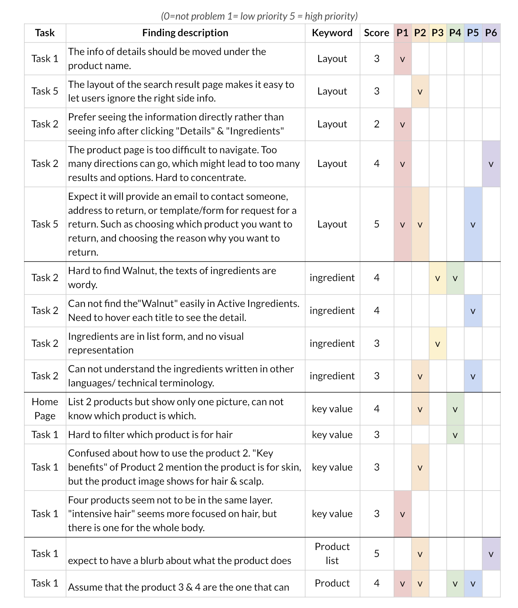
Rainbow Sheet (Categorized)How we improve the experience of Kazani Beauty website
Recommendation 1: Add a blurb to improve user understanding on the product list page
On the Product List Page of Kazani Beauty Website, 4 of our users can not guess correctly the function and target area of each product. And 2 of our users thought Product 3 and Product 4 are the same.
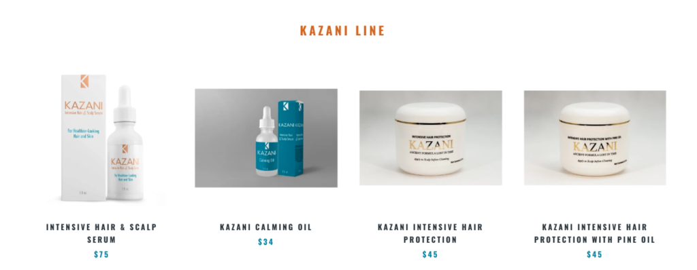
Product list section of the shop pageTherefore, to help first-time users better understand the key functions and differences of these products, we add a blurb to each product, including key functions and target areas under each product name, add the white circle tag on the photo, to highlight the different parts of the similar products, and keep the product name style and image format same to have a more consistent look.
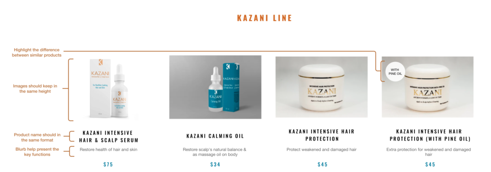
Mockup of adding (1) a blurb of product key function, (2) tag to highlight the difference, and (3)(4) keep the consistent format for each product on the product list page.Recommendation 2: Provide matched key product pictures to enhance product impression
On the Homepage, we can see that the “INTENSIVE HAIR & SCALP SERUM” and the “KAZANI CALMING OIL” are the two key products that the website wants to highlight. However, 2 of our users can not understand the picture shown on the home page is which product at the first glance because there are two product names on the left and only one product image on the right.
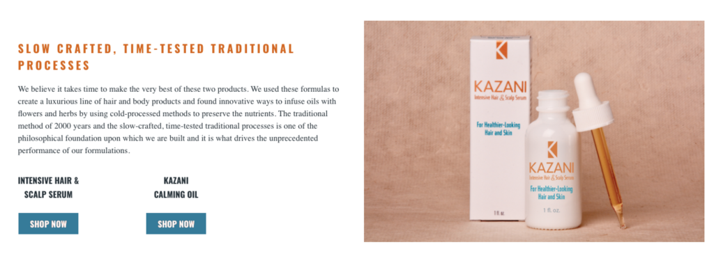
Key products section on the home pageTherefore, to create a better impression of the products, we recommend providing matching images of key products, which can help each product associate with the correct image in the user’s mind.
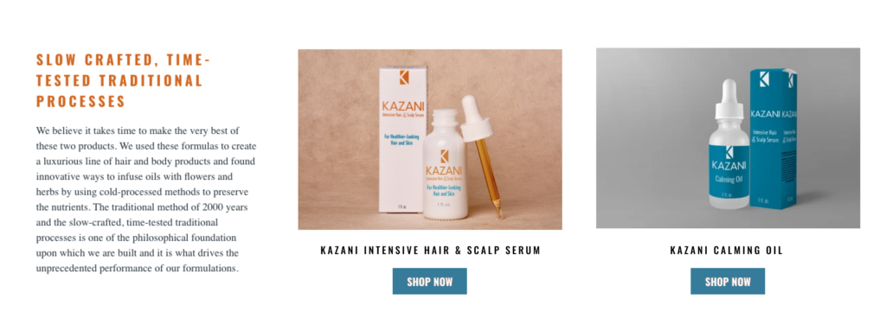
Mockup of providing matching images for key products on the home pageRecommendation 3: Adjust layout to improve the experience of navigation
Browsing product information is a key process when deciding to purchase. On the product detail page, we found out that users are able to add products into the cart easily but feel the product detail page is too difficult to navigate.
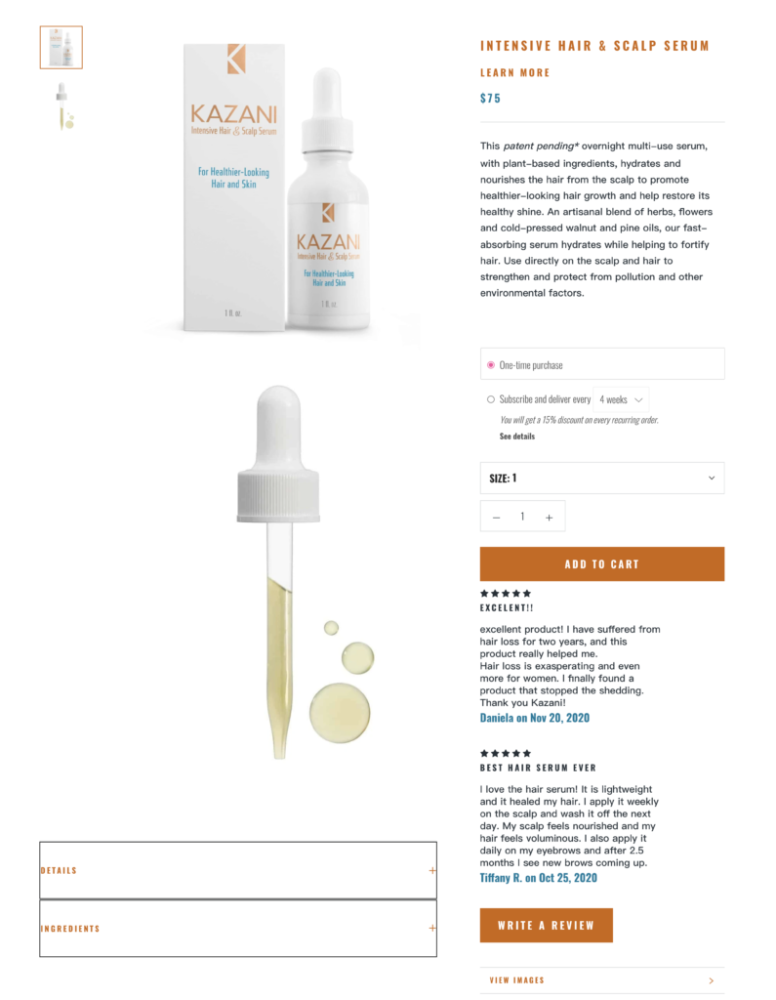
Current product detail page of intensive hair & scalp serum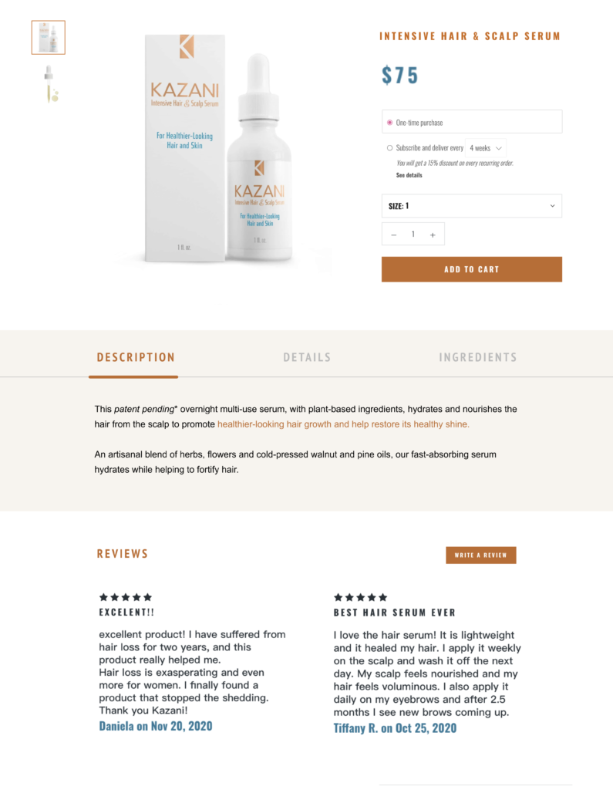
A tweak layout of the product detail page of intensive hair & scalp serumWe suggested the following changes to improve the usability issues on the product detail page.
- Categorize similar functions into the same area.
- Highlight the key feature.
- Move the instruction from description to details.
Recommendation 4: Add images and common names to ingredients to improve user understanding of the product
We focused on how easily users can find ingredients used in making the product. However, the analysis shows that 4 out of the 6 participants struggled to understand and scan the ingredient section. Therefore, we propose two solutions to solve this issue:
- Adding Images and Common Name of the ingredients.
- Add allergy warning to the product details page.
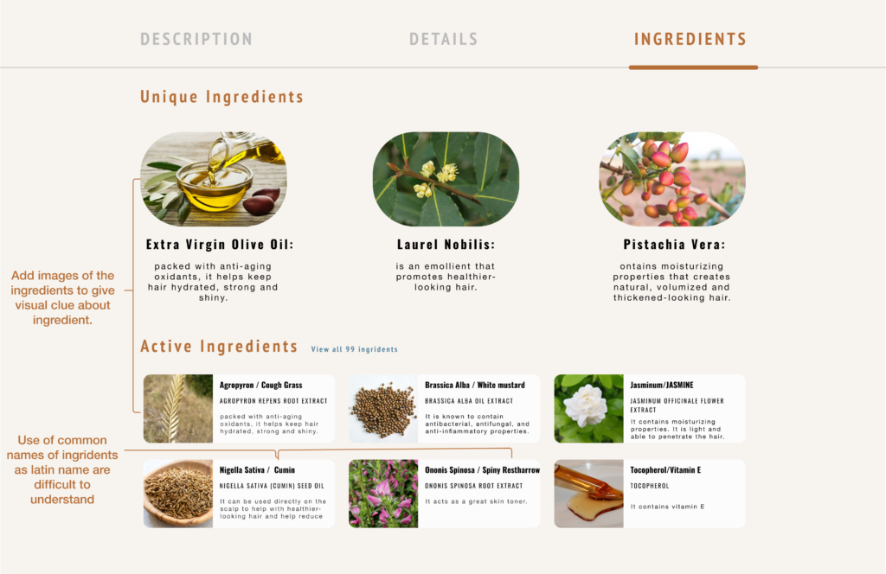
Mockup of understandable ingredients section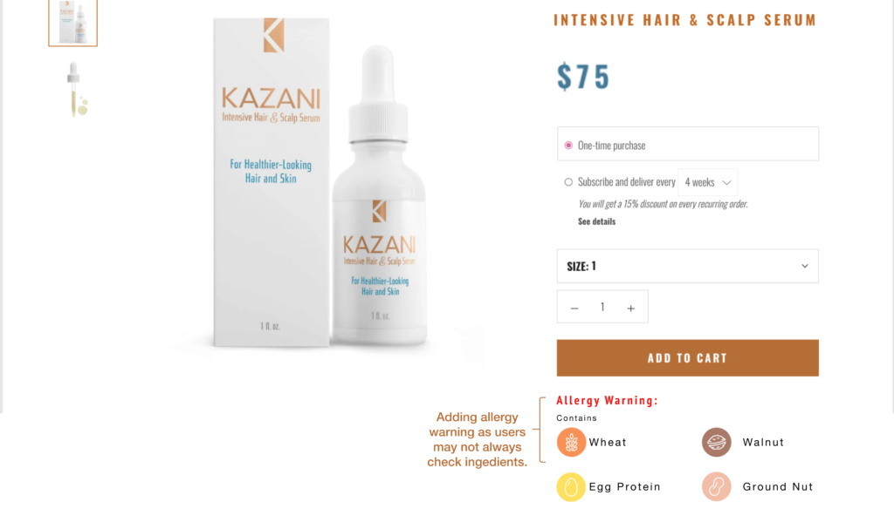
Mockup of product detail page displaying Allergy WarningsRecommendation 5: Remove upper buttons to make lower buttons visible and clickable
On the Kazani website, there are two buttons about discounts and rewards at the bottom corner which can be easily found for users.
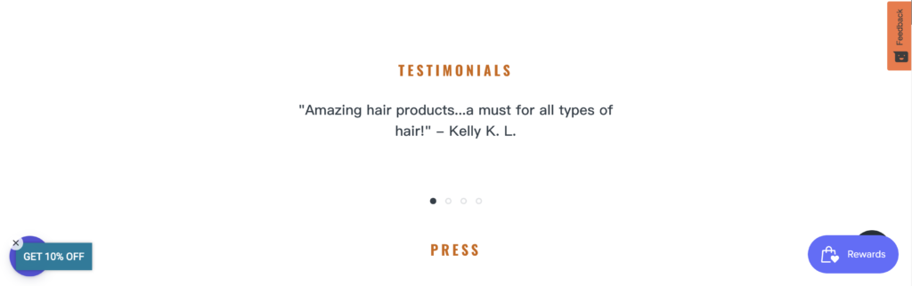
The buttons are overlapped with upper buttons at the corner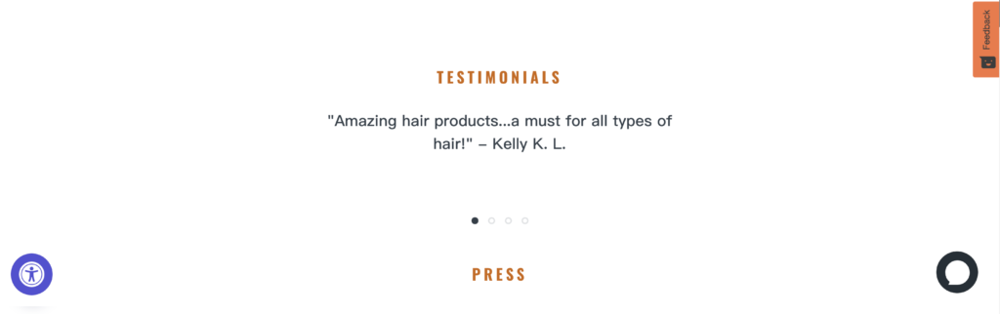
Our recommendation of removing upper buttonsTo make each button clickable, we suggest removing the “GET 10% OFF” and “Rewards” buttons and placing promotion news at the top of the home page.
Recommendation 6: Use number list or bulleted list to improve users’ understanding of the return process
In the task, most users successfully found the page of returns and refunds in task 5. Thus, the location of the page matches their expectation. But 3 of the users couldn’t find out the information on how to return and get a refund after reading the paragraphs on the page. They expected that the page of returns and refunds would provide information, such as an email to contact someone, an address to return, or a request form for a return.
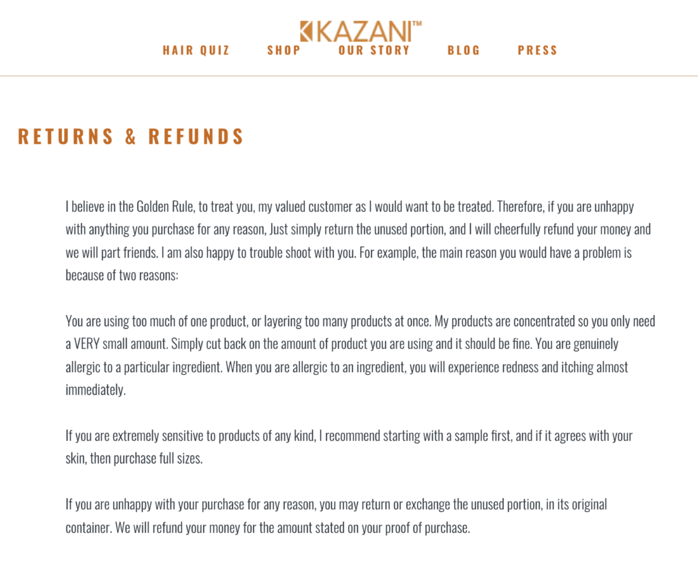
The current page of returns and refunds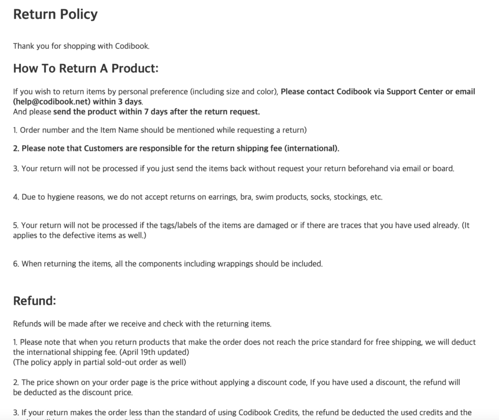
An example of the page of returns and refunds layoutThere are two actions to address this concern:
- Provide the process and policy of how users request for return and refund.
- Make long texts into a number list or bulleted list.
Result: Small Tweaks But Effective Improvement
Overall, the website is very informative and relatively easy to navigate, and easy to purchase the products through the website. However, within the home page, product list page, product detail page, and the page of refund and return problems identified by 6 users through moderated user testing were related to the following themes: Difficult to understand the product list page, marred product impression, impaired product detail page. This report recommends 6 possible changes to help improve the usability of website users. By implementing these changes, we believe that the website would provide clearer accessibility to meet the various demands of users.
On the briefing day, after we present our suggestions to our client, Selmin was very impressed with the findings we bring out and mention that she know these products so well but she had never noticed these issues before. She can't wait to send our report to her graphic designer to refer our recommendations to modify their new website layout.
“I never realize, you know I am doing this 24 hours, I know how the product does, so I forget the, I mean when you did it, you won’t see it, you know, like on the blind spot. Especially the first recommendation, people don’t know what it (the product) is for. OMG how could I leave that out.” 🤩
- Selmin Karatas, Founder of Kazazi Beauty
In this project, I walk through the process of evaluating the usability of an online shopping website with a real client, learned the research method of Moderated User Testing to observe and extract the potential usability issues, and proposed 6 recommendations to improve the overall online shopping experience on Kazani Beauty website. Overall, it is a very good experience to have the chance to implement my design on a real product.